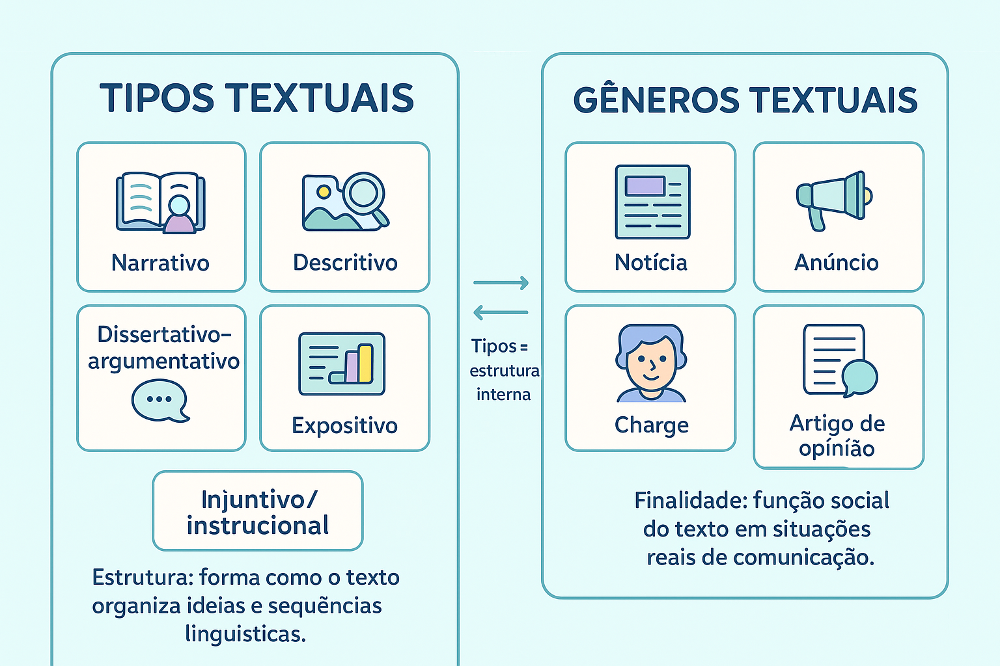

Gêneros Textuais e Tipos Textuais: Relação, Diferenças e Exemplos
Ao abrir o jornal pela manhã, conferir uma mensagem nas redes sociais ou redigir uma redação para o ENEM, você está imerso em atos de comunicação que assumem diferentes formatos. No entanto, uma das dúvidas conceituais mais comuns — e que frequentemente gera tropeços nas provas de vestibulares — é: qual é a diferença real entre gêneros textuais e tipos textuais?
Embora esses dois conceitos caminhem de mãos dadas, eles atuam em planos complementares. Enquanto os gêneros textuais respondem às necessidades sociais e históricas do cotidiano (o bilhete, o meme, a reportagem), os tipos textuais atuam como as "peças de Lego" estruturais (a narração, a descrição, a injunção) que sustentam o texto por dentro.
Neste conteúdo, você vai compreender a relação mútua entre esses conceitos, entender o fenômeno da heterogeneidade tipológica, comparar suas diferenças essenciais em um quadro sintético e testar seu raciocínio com uma questão comentada.

Gêneros Textuais vs. Tipos Textuais: O Conceito Essencial
Para o linguista brasileiro Luiz Antônio Marcuschi, a distinção entre esses dois conceitos é categórica e indispensável para a análise do discurso:
Gêneros Textuais são eventos comunicativos reais, plásticos e infinitos, determinados por sua função social. Tipos Textuais são arranjos teóricos, formais e finitos (narração, descrição, dissertação, exposição e injunção), determinados por sua natureza linguística interna.
O que são Gêneros Textuais?
Os gêneros textuais (ou discursivos, como denominou Mikhail Bakhtin) são formas relativamente estáveis de enunciados criadas pela sociedade para viabilizar a interação cotidiana. Eles nascem, evoluem e desaparecem na medida em que a cultura e a tecnologia se transformam.
Pilares de Caracterização dos Gêneros
- Função Sociocomunicativa: Todo gênero existe para cumprir uma missão concreta: informar (notícia), instruir (bula de remédio), emocionar (poema), reivindicar (abaixo-assinado) ou entreter e criticar (tirinha).
- Contexto de Circulação e Suporte: O espaço em que o texto é veiculado define seu formato: o papel impresso do livro, a tela do smartphone, o mural da escola ou o painel de uma revista científica.
- Estrutura Composicional Reconhecível: Partes convencionadas socialmente pelo uso contínuo (por exemplo: manchete, lide e corpo na notícia; remetente, vocativo e despedida na carta).
- Flexibilidade e Dinamismo: Com o surgimento da internet, nasceram novos gêneros digitais — como threads no X/Twitter, posts no Instagram, podcasts e memes —, demonstrando sua natureza infinita.
O que são Tipos Textuais?
Os tipos textuais representam a matriz estrutural e lógica da língua. Eles são modelos teóricos universais e se apoiam em regras gramaticais estritas, tempos verbais e relações sintáticas:
As Cinco Sequências Tipológicas Básicas
- Narrativo: Relato de ações articuladas por personagens no tempo e no espaço, com predomínio de verbos no pretérito.
- Descritivo: Retrato verbal de atributos, objetos, cenários ou estados, com abundância de substantivos, adjetivos e verbos de ligação.
- Dissertativo-Argumentativo: Defesa de uma tese por meio de argumentos lógicos e conectivos de causa, contraste e conclusão.
- Expositivo: Apresentação e explicação didática e neutra de conceitos, teorias e dados objetivos.
- Injuntivo: Orientação e instrução ao interlocutor com verbos no modo imperativo ou infinitivo.
O Fenômeno da Heterogeneidade Tipológica
Um gênero textual quase nunca é composto por apenas um tipo textual. Pense em uma receita culinária: a lista de ingredientes é pura descrição (quantidades, pesos, qualidades), enquanto o modo de preparo é pura injunção (ordens, etapas). Um romance é predominantemente narrativo, mas abriga sequências descritivas e dissertativas. O que define o texto é a sua sequência tipológica dominante.
Quadro Comparativo: Diferenças Fundamentais
Para não confundir nunca mais em avaliações escolares, vestibulares ou no ENEM, compare as duas categorias lado a lado:
| Critério | Tipos Textuais | Gêneros Textuais |
|---|---|---|
| Pergunta central | "Como o texto está estruturado gramaticalmente?" | "Para que o texto serve e em qual situação social circula?" |
| Natureza | Teórica, linguística e gramatical. | Social, histórica, cultural e comunicativa. |
| Quantidade | Finita e limitada (cerca de 5 tipos fundamentais). | Infinita, aberta e em constante criação/mutação. |
| Foco principal | Classes de palavras, tempos verbais e sintaxe. | Interlocutores, propósito, suporte e contexto prático. |
| Exemplos clássicos | Narração, descrição, dissertação, exposição e injunção. | Notícia, artigo científico, conto, bula, receita, meme, e-mail. |
Como os Tipos se Manifestam nos Gêneros do Cotidiano
Observe como diferentes gêneros combinam sequências tipológicas para alcançar seus objetivos comunicativos:
Gênero: Reportagem
Possui como base o tipo expositivo (apresentação de fatos investigados), mas frequentemente recorre ao tipo descritivo (para situar cenários e personagens reais) e ao tipo narrativo (ao relatar a sucessão cronológica dos acontecimentos).
Gênero: Artigo de Opinião
É sustentado predominantemente pelo tipo dissertativo-argumentativo (defesa da tese do autor), mas utiliza sequências expositivas para contextualizar dados da realidade e sequências narrativas curtas como ilustração exemplificativa.
Questão de Aplicação
Questão: (Mestre Kira) Leia atentamente o trecho a seguir, extraído de um manual prático de saúde:
"O soro caseiro é uma solução simples composta por água potável, cloreto de sódio e sacarose. Para prepará-lo, misture rigorosamente uma colher de café de sal e uma colher de sopa de açúcar em um litro de água previamente fervida ou filtrada. Ofereça ao paciente em pequenas colheradas ao longo do dia."
A respeito da organização textual do fragmento e da relação entre tipos e gêneros textuais, assinale a proposição correta:
- O trecho pertence ao gênero discursivo dissertação acadêmica, pois emprega uma sequência tipológica predominantemente argumentativa.
- O fragmento exemplifica a heterogeneidade tipológica: inicia com uma sequência descritiva/expositiva dos componentes e desenvolve-se por meio de uma sequência injuntiva orientadora.
- A presença de verbos no imperativo impede a identificação de gêneros textuais na mensagem, tornando-a restrita à esfera gramatical pura.
- O texto classifica-se integralmente como do tipo narrativo, já que relata a trajetória cronológica de uma ação ficcional no tempo.
- Os tipos textuais e os gêneros textuais do fragmento coincidem plenamente, revelando que ambos os conceitos são sinônimos nos manuais práticos.
Resolução
A alternativa correta é a 2 — O fragmento exemplifica a heterogeneidade tipológica...
Comentário analítico: O fragmento demonstra na prática a convivência entre diferentes tipos textuais em um mesmo enunciado (heterogeneidade tipológica). No primeiro período, há a definição e caracterização dos componentes do soro (sequência expositiva/descritiva). Em seguida, com o uso de verbos no imperativo ("misture", "ofereça"), instaura-se a sequência do tipo injuntivo, que ensina o procedimento passo a passo. Gênero e tipo não são sinônimos, e o texto não apresenta marcas de narração nem de dissertação argumentativa.
Resumo: Como Não Confundir Gêneros e Tipos?
Dominar essa distinção é o segredo para gabaritar questões de Linguagens e estruturar qualquer texto:
- Tipos Textuais: Estruturas formais fixas e fechadas (5 modelos: narrar, descrever, dissertar, expor, instruir).
- Gêneros Textuais: Manifestações comunicativas infinitas que usamos no dia a dia em sociedade (notícias, e-mails, crônicas, posts).
- Relação Prática: Os tipos textuais são os blocos de construção; os gêneros são os edifícios prontos habitados pela comunicação.
- Heterogeneidade: Um gênero quase sempre mescla dois ou mais tipos de texto. Busque sempre a sequência predominante.
Continue estudando Produção Textual
- Tipos textuais: características, exemplos e funções no ENEM
- Texto Narrativo: o que é, elementos (PENTE) e estrutura do enredo
- Texto Descritivo: o que é, características, tipos e exemplos
- Texto Injuntivo: o que é, características, exemplos e diferenças
- Texto Expositivo: o que é, características, tipos e exemplos
- Texto Prescritivo: o que é, características e diferenças para o texto injuntivo
- Coesão, coerência e progressão temática na produção textual
- Produção Textual e Redação — página 1
- Produção Textual e Redação — página 2
Referências
BAKHTIN, Mikhail. Estética da criação verbal. São Paulo: Martins Fontes, 2003.
BRASIL. Ministério da Educação. Base Nacional Comum Curricular (BNCC): Linguagens e suas Tecnologias no Ensino Médio. Brasília: MEC, 2018.
KOCH, Ingedore Grunfeld Villaça; ELIAS, Vanda Maria. Ler e compreender os sentidos do texto. São Paulo: Contexto, 2015.
MARCUSCHI, Luiz Antônio. Gêneros textuais: definição e funcionalidade. In: DIONÍSIO, A. P.; MACHADO, A. R.; BEZERRA, M. A. (Orgs.). Gêneros textuais & ensino. Rio de Janeiro: Lucerna, 2002.
Explore Outros Conteúdos
Continue seus estudos acessando outras seções do site Mestre Kira: